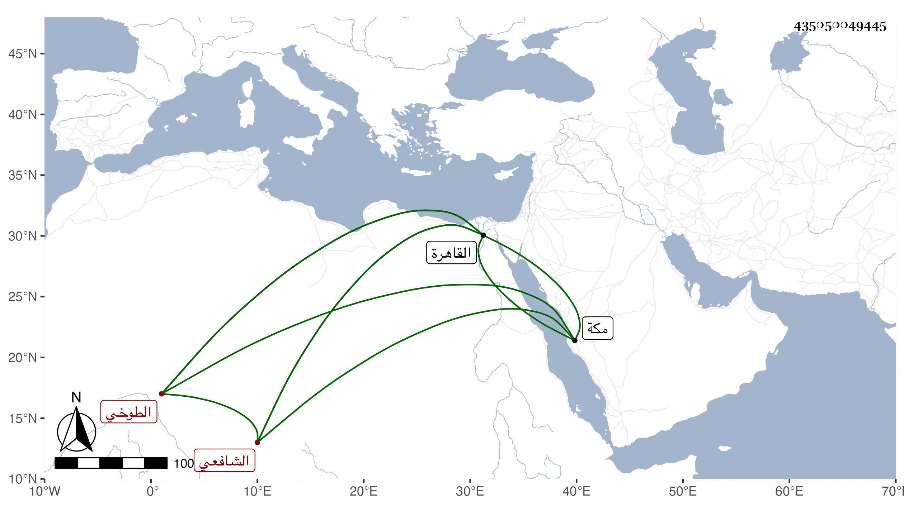

0902Sakhawi.DawLamic.ITO20230111-ara1.EIS1600.435050049445
Biography ID: 435050049445
8
محمد بن عبد الرحمن بن محمد بن رجب بن صلح الشمس الطوخي الشافعي والد أحمد الماضي ويعرف بابن رجب . نشأ فحفظ القرآن والشاطبية وبعض التقريب للنووي أو جميعه والتبريزي والحاوي والملحة ، وعرض على جماعة وأخذ في الفقه عن الشمس الشنشي وفي النحو عن ابن الزين بل تلا عليه للسبع إفرادا وقدم القاهرة فأخذ عن شيخنا والعلم البلقيني والبدر النسابة وغيرهم ، وحج مرارا وجاور في بعضها وقرأ بمكة على أبي الفتح المراغي في مسلم وولي عقود الأنكحة ببلده وكان عين أهلها فضلا وديانة وصلاحا وتعبدا ، وقد حضر عندي في بعض مجالس الأملاء واغتبط بها وذلك حين قدومه القاهرة قبيل موته ليتداوى من مرض وأقام نحو شهرين ، ثم رجع وقد نصل يسيرا فلم يلبث أن مات في يوم الجمعة سادس عشري جمادى الأولى سنة سبع وسبعين ودفن في عصره وهو ابن ثلاث وستين رحمه الله وإيانا .
